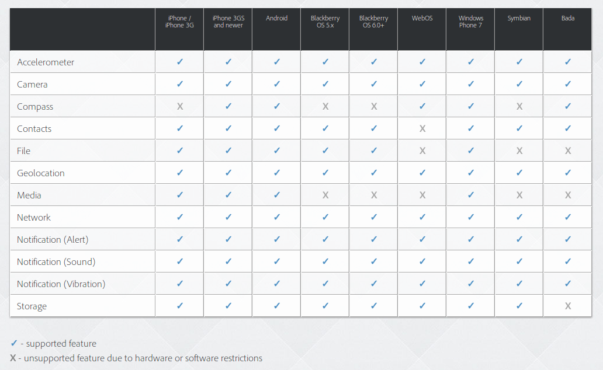
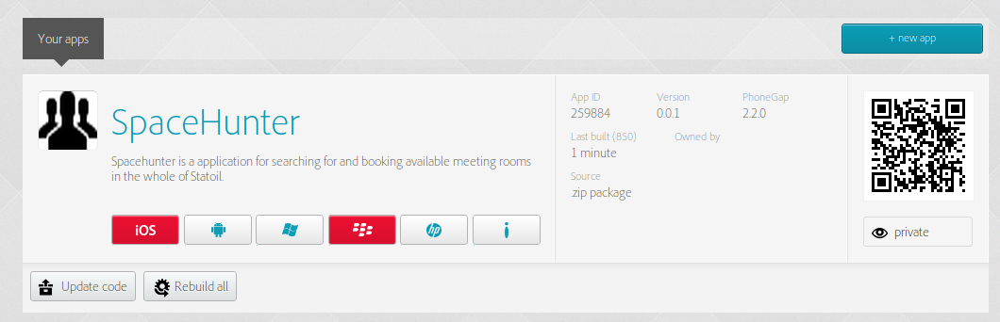

spacehunter mobile
Agenda
HTML5 Geolocation
Uses HTML5 Geolocation to determine:
- Nearest locations list. Not suitable for single rooms, as indoor position accuracy are bad
- Map of locations (centered on user position)
- As starting point for search
Works well on cellphones, not so good on laptops..
navigator.geolocation.getCurrentPosition(function (pos) {
var lat = pos.coords.latitude;
var lon = pos.coords.longitude;
var searchDistance = 10; //km
spacehunter.repo.getLocationsNearPosition(lon, lat, searchDistance * 1000, function (locations) {
//handle response here (ie display locations in list)
});
}, function (error) {
alert("Unable to determine location. Error: " + error.code);
}, {timeout: 50000});
Distance calculation
All locations have a position (lon, lat), ex:
{ "key": "TR-RO", "country": "Norway", "area": "Trondheim", "location": "Rotvoll", "position": { "lat": 63.438878, "lon": 10.478261}}
To get distance
function getLocationsSortedByDistance(lon, lat) {
var userPos = new Point(lon, lat);
var distances = allLocations.map(function (location) {
var pos = new Point(location.position.lon, location.position.lat);
var dist = userPos.distanceTo(pos);
return {location: location.location, distance: dist};
});
return distances.sort(function (a, b) {return a.distance - b.distance; });
}
Point implementation:
var Point = function(x,y){
this.x = x;
this.y = y;
};
Point.prototype.distanceTo = function(point){
var a = {lon: this.x, lat: this.y};
var b = {lon: point.x, lat: point.y};
return distVincenty(a, b) * 1000;
};
var distVincenty = function(p1, p2) {
//Implementation Vincenty's formulae (http://en.wikipedia.org/wiki/Vincenty%27s_formulae)
//for calculating distance in meters between two lon/lat points
//code borrowed from OpenLayers.org
}
Map interface
- Use Leaflet (leafletjs.com) to display a map with locations
- Uses OpenStreetMap.org background Map
- Locations are clickable, takes you to room listing for location
- Map initially centered on user location
Setting up a map in leaflet
var map = new L.Map('mapcanvas'); //create map in div with id="mapcanvas"
var osmUrl = 'http://{s}.tile.openstreetmap.org/{z}/{x}/{y}.png';
var osm = new L.TileLayer(osmUrl, {minZoom: 2, maxZoom: 14, attribution: 'Map data © OpenStreetMap contributors'}); //create OpenStretMap layer
map.addLayer(osm); //add openStreetMap layer to map
_.each(locations, function (location) {
var marker = L.marker([location.position.lat, location.position.lon]).addTo(map); //add markers
});
map.setView(new L.LatLng(lat, lon), 9); //initialize map
PhoneGap
- Open source mobile development framework.
- Enables developers to write native apps with HTML, CSS, and JavaScript.
- Gives access to the native funtionalities of mobile devices.
- PhoneGap apps will run in the background in your mobile web browser.
Supported Features
Why use PhoneGap
- Crossplatform. Write once, runs lots of places.
How does PhoneGap work

- Create your apps using HTML, CSS, and JavaScript.
- Use PhoneGap JavaScript API to access native functionality.
- Compile and package your apps for distribution (.apk for Android).
- Install and run your apps on your mobile device.
PhoneGap Build

- A cloud service that can build your PhoneGap apps.
- Supports multiple platforms.
- Apps will always be built with the most up-to-date SDK for the platform you are targeting.
How it works

- Simply upload your PhoneGap code (HTML, CSS, and JavaScript) to the PhoneGap Build service. After it has finished building, it will return you something you can install and run on your device.
- You can configure the apps (title, icons, splash screens, and other properties) with a configuration XML file, config.xml.
How to build
-

- Control the building process through a web interface or REST API.
- Either:
- Upload sources files (a ZIP file of HTML, CSS and JavaScript, or a single index.html file).
- Use a GitHub repository.
How we build
We have written a simple build script that uses the REST API of PhoneGap Build.
The REST API
- Allows you to:
- Create, build, update, and download apps.
- Get build information status.
- Create, and delete projects.
- Supports two forms of authentication:
- Basic authentication (username and password).
- Token authentication.
REST API Example
Get a JSON-encoded representation of a particular app.
GET https://build.phonegap.com/api/v1/apps/:id
curl -u andrew.lunny@nitobi.com https://build.phonegap.com/api/v1/apps/2
Result (JSON):
{
"title":"PhoneGap: Getting Started",
"id":2,
"package":"com.phonegap.getting.started",
"version":"1.0.0",
"repo":"https://github.com/phonegap/phonegap-start.git",
"description":"A template for getting started with
PhoneGap development and build.phonegap.com",
"debug":false,
"private":true,
"link":"/api/v1/apps/2",
"build_count":12,
"status": {
"android":"complete",
"blackberry":"complete",
"ios":"complete",
"symbian":"complete",
"webos":"complete",
"winphone":"complete"
},
"download":{
"android":"/api/v1/apps/1/android",
"blackberry":"/api/v1/apps/1/blackberry",
"ios":"/api/v1/apps/1/ios",
"symbian":"/api/v1/apps/1/symbian",
"webos":"/api/v1/apps/1/webos",
"winphone":"/api/v1/apps/1/winphone"
},
"error":{},
"icon":{
"filename":"big-icon.png",
"link":"/api/v1/apps/2/icon"
},
"role":"admin",
"keys":{},
"collaborators":{
"link":"/api/v1/apps/9/collaborators",
"active":[
{
"id":9,
"person":"andrew.lunny@nitobi.com",
"role":"admin",
"link":"/api/v1/apps/9/collaborators/9"
},
{
"id":13,
"person":"foo@bar.com",
"role":"developer",
"link":"/api/v1/apps/9/collaborators/13"
}
],
"pending":[
{
"person":"nobody@nitobi.com",
"role":"tester"
}
]
}
}
The build script
- Request a build by uploading the SpaceHunter source code to PhoneGap Build service (as a .zip file)
- Wait for build to be finished.
- Download installable apps for various mobile platforms.